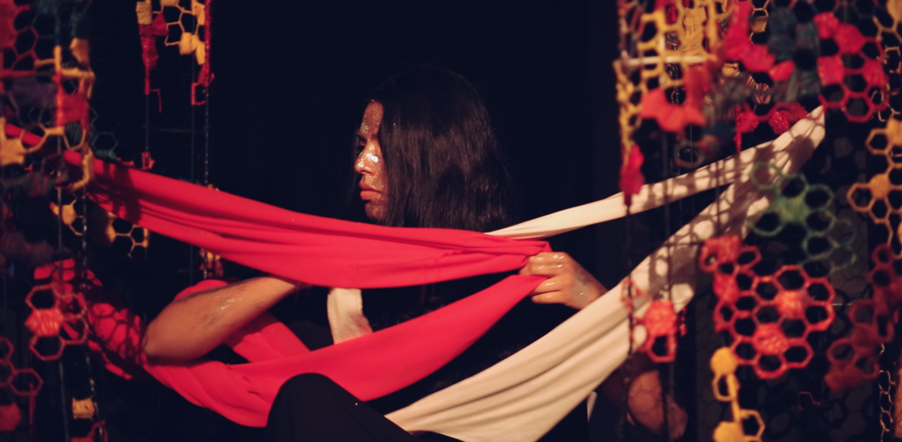
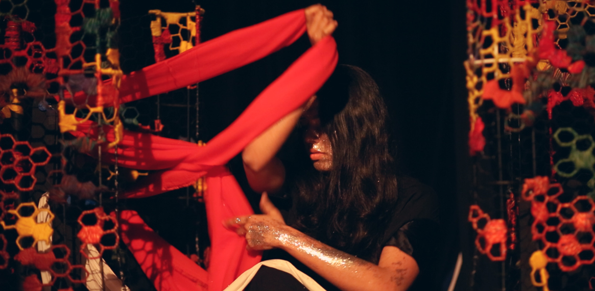
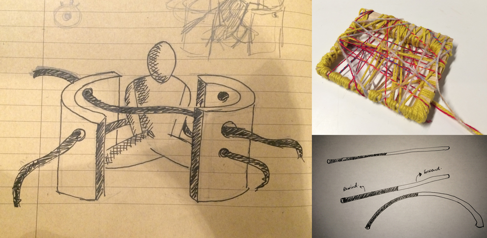
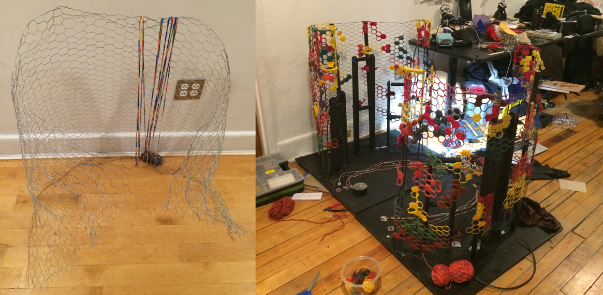
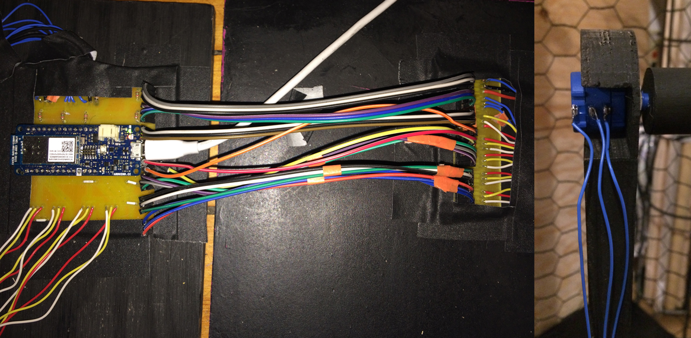

For eleven months and some days, I recorded moments in my life as 'soundstories'. I would focus all my attention on the sounds around me, try to isolate each one in my mind, and record descriptions of these sounds in chronological order. They almost accidentally became a poetic portrait of me. In this performance, I recollect these memories, woven in my brain, pulling them in and out of the labyrinth of my mind.

For eleven months and some days, I recorded moments in my life as 'soundstories'. I would focus all my attention on the sounds around me, try to isolate each one in my mind, and record descriptions of these sounds in chronological order. They almost accidentally became a poetic portrait of me. In this performance, I recollect these memories, woven in my brain, pulling them in and out of the labyrinth of my mind.

For eleven months and some days, I recorded moments in my life as 'soundstories'. I would focus all my attention on the sounds around me, try to isolate each one in my mind, and record descriptions of these sounds in chronological order. They almost accidentally became a poetic portrait of me. In this performance, I recollect these memories, woven in my brain, pulling them in and out of the labyrinth of my mind.
A reminiscent portrait in sound. A performative recollection of memories. This piece was performed at Littlefield, Brooklyn.

Process // Initial sketches of the intrument and material moodboard.

Process // The sculpture is composed of two curved frames. The frames are made using wire mesh, yarn, metal and wooden supports. Wrapping yarn around the mesh became a collective community activity at ITP, NYU.

Process // Wooden rollers inside the sculpture are connected to six 10-turn-potentiometers that change value as the fabric moves on the rollers. I used an Arduino MKR 1000 to connect the potentiomenters to Max/MSP.